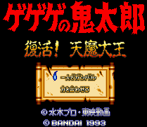

Gegege no Kitarou - SNES Games

- Company: Bandai
- Date Released: 5 Feb 1993
- Price (in yen): 8800
- Genre: Platform game
Controls
- A button: [not used]
- B button: Jump
- X button: Use Shield
- Y button: Shoot
- L button: Change Item
- R button: Change Item
- Start: Pause
- Select: [not used]
Anime Video Game Resource Center © 1998 by Luis A. Cruz